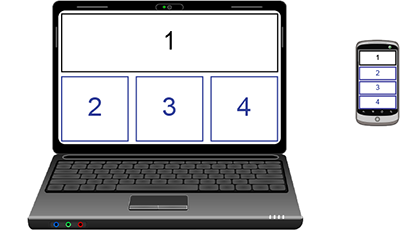

Creating effective responsive designs
When you design communications for HTML-based output, a major part of the design process is ensuring that the end result responds to your customer's device screen size and orientation, as well as the browser or email client that they are using. Effective responsive designs have flexible layouts that automatically adjust to the viewing device, whether it is a desktop, a laptop, a tablet, or a mobile phone.
When you design for large screens, you might want to place content side by side in multiple columns to take full advantage of the available screen space. You can achieve this by creating a multi-column container layout in your design. On small screens, however, a single-column layout is usually needed to present content legibly, without requiring the user to scroll horizontally.
In Communications Designer, the output from the designs that you create will automatically reflow into a single column from a multi-column layout when viewed on a device with a viewport that is smaller than 480 pixels. When the output is restructured in this manner, by default, any container row with multiple child containers in it is rotated so that the child containers from left to right are vertically stacked top to bottom in the same order, as shown in the following image.
Example of container stacking based on device screen size

In Design view, you can choose to see your design in the desktop layout view or the mobile layout view. You can also use Simulation view to preview how the layout will reflow when you view the output on mobile and desktop devices. The desktop layout view shows the design in the standard layout as it would appear on devices with a viewport greater than 480 pixels. The mobile layout view reflows the design into a single-column responsive layout, and shows the design as it would appear on devices with a viewport smaller than 480 pixels.
By default, Design view always opens to the desktop layout view. To change the layout view, select from the following options on the design toolbar:
- Mobile view button —Displays the design in the mobile layout view.
- Desktop view button —Displays the design in the desktop layout view.
Note: You cannot add new containers or split existing containers when you are in the mobile layout view.
When you switch between these layout view options, you can see how your design elements change position relative to screen size. Make sure that you place content so that the output is still correctly structured when the design elements reflow on different viewing devices. If you determine that you do not want some multi-column layout elements of your design to be changed to the stacked single-column layout, you can specify those settings as well.
To prevent a selected multi-column container from being rotated in mobile view, on the Container properties card  , clear the Rotate on mobile check box.
, clear the Rotate on mobile check box.
When you create a design for HTML-based output, you might want to consider how the output appears on various device sizes. If you begin with a design that is intended to be viewed on a large desktop screen, some design elements in the output might not be as easily readable on mobile devices like tablets or smartphones.
Communications Designer lets you control the design elements that are visible on desktop or mobile devices to create effective responsive designs. For example, you can choose to hide content that is not easily readable when scaled to a smaller size (such as a banner image) when your design is viewed on a mobile device. You can also specify a different smaller image that is visible only on mobile devices and is hidden when the design is viewed on a desktop.
When you enable these features, the Exstream engine adds media query styles to the automatically generated CSS styles. These styles detect the viewport of the viewing device to display only those containers that are not hidden for that device.
To set the device-specific visibility for a selected container, on the Container properties card , select from the following options:
- Hide on mobile—Select this check box to hide the selected container when the design is viewed on a device with a viewport smaller than 480 pixels.
- Hide on desktop—Select this check box to hide the selected container when the design is viewed on a device with a viewport greater than 480 pixels.
The first time that you open a design, you will see all hidden containers in the selected layout view. To hide the containers that are set to be hidden, click the Toggle hidden containers button . When this option is active (), containers set to be hidden are not visible. When this option is not active (), containers set to be hidden in a specific layout are visible and are shaded red in that layout view. When you save and close the design, the current state of the Toggle hidden containers option is also saved and persists until it is changed.
A key responsive design feature is scaling design objects and containers so that they resize automatically to accommodate different devices and screen orientations. In Communications Designer, the designs that you create will automatically scale up or down based on the screen size of the viewing device. This automatic resizing is supported for all design objects that you can use in email and web designs except embedded objects.
Tip: Because email and web designs resize automatically, if you need to restrict the way that some objects resize when the output is viewed on a smaller screen, you can embed design objects into a table that is placed within a container.